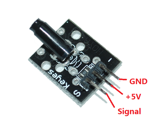
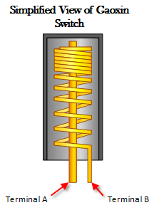
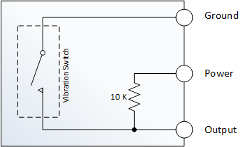

Sensors de vibracions
A la figura podem veure un mòdul sensor de vibració KY-002.

Aquest sensor utilitza un interruptor de vibració Gaoxin SW-18010P i permet detectar impactes, cops i sacsejades o tremolades. Aquest interruptor consisteix en un terminal que forma una barra central i una molla que rodellal’eix central. Quan una força suficient es transfereix al interruptor i la molla es mou i els dos terminals s’ajunten temporalment. El posicionament de l’interruptor és important, es a dir, que l’interruptor ha d’estar tan a prop com sigui posible de l’àrea a monitoritzar. En cas contrari, la vibració detectada por ser amortiguada per altres components estructurals del projecte. En cas contrari, si l’interruptor resulta massa sensible per a la vostra aplicació proveu d’allunyar una mica el sensor de la zona a mesurar.

A la imatge de sota es pot apreciar l’esquema intern del mòdul KY-002.

Podem veure de l’esquema que quan es detecta una vibració, l’interruptor es tanca i el pin que estigui connectat a la sortida del mòdul, que estava detectant un valor HIGH passarà a estar en un estat LOW perquè passa a estar connectat a GND.
Farem un codi de prova que faci encendre un LED quan el sensor detecti una vibració. A continuació tenim el llistat del programa:
import RPi.GPIO as GPIO
ShockPin = 11
LedPin = 10
Led_status = 1
def setup():
GPIO.setmode(GPIO.BOARD) # Numbers GPIOs by physical location
GPIO.setup(LedPin, GPIO.OUT) # Set LedPin's mode is output
GPIO.setup(ShockPin, GPIO.IN, pull_up_down=GPIO.PUD_UP)
GPIO.output(LedPin, GPIO.HIGH) # Set LedPin high(+3.3V) to off led
def swLed(ev=None):
global Led_status
Led_status = not Led_status
GPIO.output(LedPin, Led_status) # switch led status(on-->off; off-->on)
print("led: " + ("on" if Led_status else "off"))
def loop():
GPIO.add_event_detect(ShockPin, GPIO.FALLING, callback=swLed, bouncetime=200) # wait for falling
while True:
pass # Don't do anything
def destroy():
GPIO.output(LedPin, GPIO.LOW) # led off
GPIO.cleanup() # Release resource
if __name__ == '__main__': # Program start from here
setup()
try:
loop()
except KeyboardInterrupt: # When 'Ctrl+C' is pressed, the child program destroy() will be executed.
destroy()